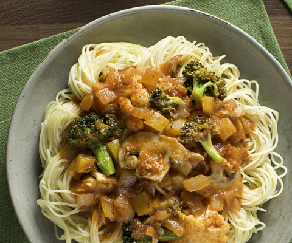

Vegetable Market Capellini

Recipe
A fresh pasta with a variety of vegetables providing loads of necessary daily nutrients.
Ingredients
- 2 tbsp Olive oil
- 4 cloves Garlic
- 1 cup Sliced mushrooms
- 3/4 cup Onion, chopped
- 1 jar Traditional Sweet Basil Sauce
- 1 1/2 tsp. Italian seasoning
- 1 1/2 cup Small broccoli florets
- 1 1/2 cup Small cauliflower florets
- 6 oz. Artichoke hearts marinated in olive oil, drained and chopped
- 1/2 cup Yellow pepper, coarsely chopped
- 1 lb. Capellini pasta, cooked
Directions
- Heat oil in a skillet over medium heat. Add mushrooms, onion and garlic. Cook, stirring often, until vegetables are tender. Add pasta sauce and seasoning. Simmer, covered, for 15 minutes.
- Add broccoli, cauliflower, artichoke hearts and yellow pepper. Simmer, covered, for 20 minutes longer or until vegetables are tender. Serve over hot, cooked pasta. Garnish with Parmesan cheese.